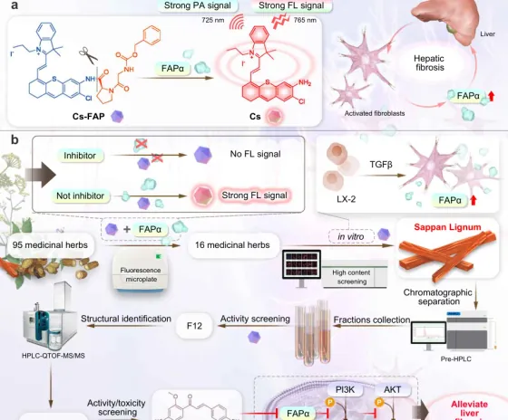
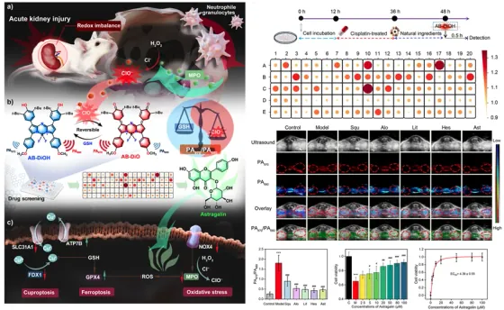
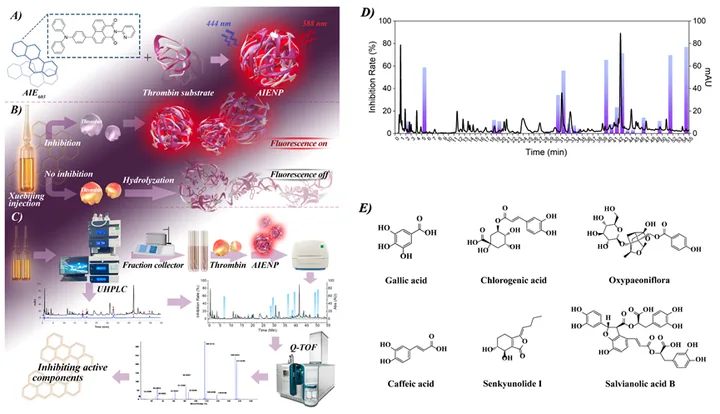
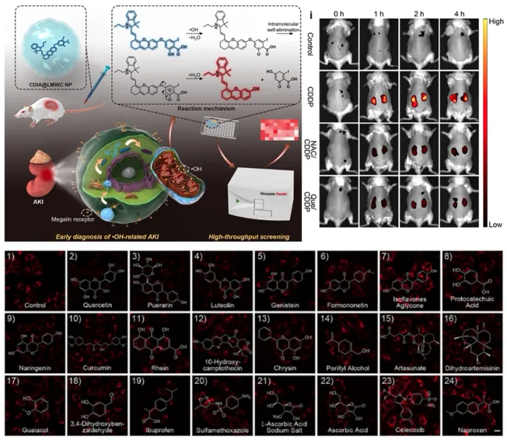
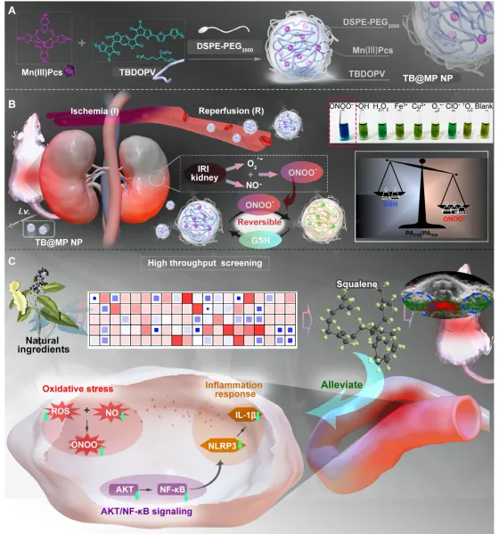

PUBLICATIONS
科研论文
依据田蒋为老师提供的成果资料完整整理。点击任一论文，可进入图文详情页查看研究主题、代表性科研图片与完整引文。
71资料收录论文
15发表年份跨度
7代表性科研图组
2011—2026成果时间范围
FEATURED RESEARCH
代表性研究
从探针设计、活体成像到天然活性成分筛选与机制验证。

Nature Communications · 2026Molecular imaging-guided discovery of a potent natural FAPα inhibitor for liver fibrosis therapy查看图文详情 →
Adv. Mater. · 2024Discovering a New Drug Against Acute Kidney Injury by Using a Tailored Photoacoustic Imaging Probe查看图文详情 →
Chem. Eng. J. · 2024A “Defend–Attack and Capture Flag” Strategy for Cascade Management of Hepatic Ischemia Reperfusion Injury查看图文详情 →
Adv. Sci. · 2023Illumination of Hydroxyl Radical in Kidney Injury and High-Throughput Screening of Natural Protectants Using a Fluorescent/Photoacoustic Probe查看图文详情 →Anal. Chem. · 2024Discovery of Natural Products Alleviating Renal Fibrosis with a Viscosity-Responsive Molecular Probe查看图文详情 →
Adv. Funct. Mater. · 2026Discovery of a Novel Nephroprotective Drug Leveraging a Customized Photoacoustic Imaging Nanoprobe查看图文详情 →COMPLETE LIST
论文目录
共收录 71 篇，按年份分组展示。
01
Molecular imaging-guided discovery of a potent natural FAPα inhibitor for liver fibrosis therapyWenze Zhang, Jiwei Li, Lei Sun, Chaoran Li, Kaiyu Zhang, Zhiying He, Guangyi Yang, Boyang Yu, Xianchuang Zheng, Haijun Xu, Jiangwei Tian et al.
02Discovery of a Novel Nephroprotective Drug Leveraging a Customized Photoacoustic Imaging NanoprobeWangning Zhang#, Ming Yang#, Xinhao Zhu, Jiaxin Zhang, Zhenheng Jiao, Bo Chen, Xianchuang Zheng*, Jiangwei Tian*, Xunfang Ding*
03Engineering Diphenyl-Coumarin-Amide BioAIEgens for Selective Cu2+ Detection and Real-Time Imaging of MitophagyLei Sun#, Jiwei Li#, Xingyu Chen, Xinyi Zhou, Yeping Bian*, Jiangwei Tian*, Haijun Xu*
04Synthesis, structure, photophysical properties of cyanine dyes based on indolium salt and benzazole unitHaowen Tang#, Jiwei Li#, Wenze Zhang#, Yue Zhao, Jiangwei Tian*, P. Gros Claude, Bolze Frédéric*, Haijun Xu*
05NADH-Activated Near-Infrared Fluorescent Probe for Efficient Screening of ADH/ALDH2 Dual Agonists for Alcohol DetoxificationJiwei Li#, Xunfang Ding#, Qilin Zhou#, Lei Sun, Jin Yan, Qian Li, Hao Liu, Renshi Li, Fanchao Feng*, Bo Chen*, Jiangwei Tian*
06Synergistic intercellular junction and anti-inflammation wound healing therapy via bioengineered hybrid nanovesiclesShiyi Zhang#, Zhiying He#, Zerui Zhou, Hanbin Xu, Shiyu Zheng, Xinyue Liu, Mengqi Zhao, Binbin Chen, Dawei Li, Ruocan Qian*, Jiwangwei Tian*
01
Discovering a New Drug Against Acute Kidney Injury by Using a Tailored Photoacoustic Imaging ProbeWangning Zhang#, Chenming Chan#, Kaiyu Zhang, Haifeng Qin, Bo-Yang Yu, Zhaoli Xue*, Xianchuang Zheng*, and Jiangwei Tian*
02A “Defend–Attack and Capture Flag” Strategy for Cascade Management of Hepatic Ischemia Reperfusion InjuryWenze Zhang#, Zhuoxia Shen#, Chaoran Li, Yumeng Yang, Tiange Zhang, Bo-Yang Yu, Xianchuang Zheng*, and Jiangwei Tian*
03Discovery of Natural Products Alleviating Renal Fibrosis with a Viscosity-Responsive Molecular ProbeKaiyu Zhang#, Lei Sun#, Wangning Zhang, Mingyuan Cao, Xiaonan Ma, Bo-Yang Yu, Haijun Xu*, Xianchuang Zheng*, and Jiangwei Tian*
04Research Progress on New Techniques and Methods for Identifying Active Ingredients in Traditional Chinese MedicineJiaxin Zhang, Xinhao Zhu, Chaofeng Zhang*, Wangning Zhang*, and Jiangwei Tian*
05A gold cluster fused manganese dioxide nanocube loaded with dihydroartemisinin for effective cancer treatment via amplified oxidative stressAlan Tianyi Wang#, Xin Wen#, Shangyi Duan, Jiangwei Tian*, Liang Liu* and Wangning Zhang*
06AIE-active large Stokes-shift BODIPY Functionalized with Carbazolyl for Lysosome-Targeted Imaging in Living CellsChenming Chan, Han Gao, Jianwei Wu, Jia Li, Jiangwei Tian*, and Zhaoli Xue*
07Recent Progress in Molecular Probes for Imaging of Acute Kidney InjuryMuqadas Sitara#, Wangning Zhang#, Han Gao, Jiwei Li*, and Jiangwei Tian*
08A SARS-CoV-2 Mpro Fluorescent Sensor for Exploring Pharmacodynamic Substances from Traditional Chinese MedicineLei Han#, Bing Wang#, Kunhui Sun, Muqadas Sitara, Meifang Li, Ping Wang, Ning Chen, Xie-an Yu*, and Jiangwei Tian*
09Rational design of CT-coupled J-aggregation platform based on Aza-BODIPY for highly efficient phototherapyShengmei Wu#, Wenze Zhang#, Chaoran Li, Zhigang Ni, Weifeng Chen, Lizhi Gai*, Jiangwei Tian*, Zijian Guo, Hua Lu*
01
Illumination of Hydroxyl Radical in Kidney Injury and High-Throughput Screening of Natural Protectants Using a Fluorescent/Photoacoustic ProbeHan Gao, Lei Sun, Jiwei Li, Qilin Zhou, Haijun Xu*, Xiao-Nan Ma, Renshi Li*, Bo-Yang Yu, and Jiangwei Tian*
02An Aggregation-Induced Emission Sensor Combined with UHPLC-Q-TOF/MS for Fast Identification of Anticoagulant Active Ingredients from Traditional Chinese MedicineZiyi Li#, Bing Wang#, Kunhui Sun, Guo Yin, Ping Wang, Xie-an Yu*, Chaofeng Zhang*, and Jiangwei Tian*
03A Multichannel Fluorescent Array Sensor for Discrimination of Different Types of Drug-Induced Kidney InjuryKunhui Sun#, Bing Wang#, Jiaoli Lin, Lei Han, Meifang Li, Ping Wang, Xiean Yu*, and Jiangwei Tian*
04Novel organoboron complexes with robust core: Synthesis, functionalization, and subcellular targetingYanfei Liu, Wenze Zhang, Lizhi Gai*, Zhikuan Zhou, Jiangwei Tian*, Hua Lu*
05A near-infrared and lysosome-targeted coumarin-BODIPY photosensitizer for photodynamic therapy against HepG2 cellsPengfei Li#, WenZe Zhang#, Yi Wang, Jiangwei Tian*, Donghai Shi, Haijun Xu*
06Generation of a high-affinity DNA aptamer for on-site screening of toxic aristolochic acid I in herbal medicines and botanical productsJiwei Li#, Meiqi Chen#, Sisi Ke, Jiangwei Tian, Haixiang Yu*, Xiufeng Liu*, Bo-Yang Yu*
07Ginsenoside Rd promotes omentin secretion in adipose through TBK1-AMPK to improve mitochondrial biogenesis via WNT5A/Ca2+ pathways in heart failureShiyao Wan, ZeKun Cui, Lingling Wu, Fan Zhang, Tao Liu, Jingui Hu, Jiangwei Tian, Boyang Yu, Fuming Liu*, Junping Kou*, and Fang Li*
08Ginseng saponin metabolite 20(S)-protopanaxadiol relieves pulmonary fibrosis by multiple-targets signaling pathwaysGuoqing Ren, Weichao Lv, Yue Ding, Lei Wang, ZhengGuo Cui, Renshi Li, Jiangwei Tian*, Chaofeng Zhang*
01
Selenocysteine-Activatable Near-Infrared Fluorescent Probe for Screening of Anti-inflammatory Components in HerbsHao Liu#, Wangning Zhang#, Sisi Wang#, Qilin Zhou, Na Xu, Wenze Zhang, Haojiang Ren, Ming Yang, Hua Lu, Xianchuang Zheng*, and Jiangwei Tian*
02Generation of cross-reactive DNA aptamers to construct the fluorescent sensing array for identifying the origin of Toad VenomJiwei Li#, Guocai Liu#, Haixiang Yu, Hongyue Ma, Xiufeng Liu, Jiangwei Tian*, and Boyang Yu*
03A Label-Free Colorimetric Aptasensor for Flavokavain B DetectionSisi Ke#, Ningrui Wang#, Xingyu Chen, Jiangwei Tian*, Jiwei Li*, and Boyang Yu
01
Small-Molecule Photoacoustic Imaging Probe with Aggregation-Enhanced Amplitude for Real-Time Visualization of Acute Kidney InjuryWangning Zhang#, Fangjian Cai#, Haijun Xu*, Yan Wu, Xie-an Yu, Lei Sun, Tiange Zhang, Bo-Yang Yu, Xianchuang Zheng*, and Jiangwei Tian*
02Near-Infrared Photoacoustic Probe for Reversible Imaging of the ClO–/GSH Redox Cycle In VivoChenming Chan#, Wangning Zhang#, Zhaoli Xue*, Yuanyuan Fang, Fengxian Qiu, Jianming Pan, and Jiangwei Tian*
03Arg-liposome-amplified colorimetric immunoassay for selective and sensitive detection of cystatin C to predict acute kidney injuryBing Wang#, Lei Zhang#, Guo Yin, Jue Wang, Ping Wang, Tiejie Wang, Jiangwei Tian*, Xie-an Yu*, and Huachao Chen*
04Rapid Fluorescence Sensor Guided Detection of Urinary Tract Bacterial InfectionsLei Zhang#, Bing Wang#, Guo Yin, Jue Wang, Ming He, Yuqi Yang, Tiejie Wang, Ting Tang, Xie-an Yu*, and Jiangwei Tian*
05A near-infrared photoacoustic probe for specific detection of fluoride ion in vivoNa Xu#, Han Gao#, Sisi Wang, Lizhi Gai, Jiangwei Tian*, Xinxin Shao*, and Hua Lua*
06Accurate identification of kidney injury progression via a fluorescent biosensor arrayXie-an Yu#, Lei Zhang#, Ran Zhang, Xuefei Bai, Ying Zhang, Yiting Hu, Yang Wu, Ziyi Li, Bing Wang*, and Jiangwei Tian*
07Renal-clearable and biodegradable black phosphorus quantum dots for photoacoustic imaging of kidney dysfunctionWangning Zhang#, Zhuoxia Shen#, Yan Wu, Wenze Zhang, Tiange Zhang, Bo-Yang Yu, Xianchuang Zheng*, and Jiangwei Tian*
08基于靶标循环放大策略的双色荧光传感体系探索何首乌“九蒸九晒”炮制 过程中不同蒸制次数对肾细胞的减毒作用高涵，刘史佳，庞会明，田蒋为*，戚进*
01
Thiophene donor for NIR-II fluorescence imaging-guided photothermal/photodynamic/chemo combination therapyQiang Liu#, Jiangwei Tian#, Ye Tian#, Qinchao Sun, Dan Sun, Dewen Liu, Feifei Wang, Haijun Xu*, Guoliang Ying*, Jigang Wang*, Ali K. Yetisen, and Nan Jiang*
02Protein/Gold Nanoparticle-Based Sensors for Monitoring the Progression of Adriamycin NephropathyXuefei Bai#, Xie-an Yu#, Ran Zhang, Ying Zhang, Yiting Hu, Lei Zhao, Mei Zhang*, Jiangwei Tian*, and Bo-Yang Yu
03A Nanosensor for Precise Discrimination of Nephrotoxic Drug Mechanisms via Dynamic Fluorescence Fingerprint StrategyXie-an Yu#, Xuefei Bai#, Ran Zhang, Ying Zhang, Yiting Hu, Mi Lu, Bo-Yang Yu*, Shijia Liu*, and Jiangwei Tian*
04A low noise and low power device composed of electrode and CD ASIC for neural and other vital signals recordingJianhui Sun, ZibinWang, Tongxi Wang, Guozhu Liu, Jiangwei Tian*
05Near-Infrared-II Nanoparticles for Cancer Imaging of Immune Checkpoint Programmed Death-Ligand 1 and Photodynamic/Immune TherapyQiang Liu#, Jiangwei Tian#, Ye Tian#, Qinchao Sun#, Dan Sun, Feifei Wang, Haijun Xu,* Guoliang Ying,* Jigang Wang,* Ali K. Yetisen, and Nan Jiang*
06Red/NIR Neutral BODIPY-Based Fluorescent Probes for Lighting Up MitochondriaJian Yang#, Ran Zhang#, Yue Zhao, Jiangwei Tian*, Shifa Wang, Claude P. Gros*, Haijun Xu*
07NIR halogenated thieno[3, 2- b]thiophene fused BODIPYs with photodynamic therapy properties in HeLa cellsYijuan Sun#, Xie-an Yu#, Jie Yang, Lizhi Gai*, Jiangwei Tian*, Xinbing Sui, Hua Lua
01
B/N-Doped p-Arylenevinylene Chromophores: Synthesis, Properties, and Microcrystal Electron Crystallographic StudyHua Lu, Takayuki Nakamuro, Keitaro Yamashita, Haruaki Yanagisawa, Osamu Nureki, Masahide Kikkawa, Han Gao, Jiangwei Tian, Rui Shang*, and Eiichi Nakamura*
02A General Strategy for the Construction of NIR-emitting Si-rhodamines and Their Application for Mitochondrial Temperature VisualizationWeiguo Tang#, Han Gao#, Jiaxin Li, Xianhui Wang, Zhikuan Zhou, Lizhi Gai, Xin Jiang Feng, Jiangwei Tian*, Hua Lu*, and Zijian Guo*
03A polydopamine -polyethyleneimine/quantum dot sensor for instantaneous readout of cell surface charge to reflect cell statesYing Zhang#, Xie-an Yu#, Yiting Hu, Xuefei Bai, Ran Zhang, Mi Lu, Jianhui Sun,* Jiangwei Tian,* Bo-Yang Yu
04Rapid and Sensitive Detection of NGAL for Prediction of Acute Kidney Injury via Polydopamine Nanosphere/Aptamer Nanocomplex Coupled with DNase I-Assisted Recycling AmplificationYiting Hu#, Xie-an Yu#, Ying Zhang, Ran Zhang, Xuefei Bai, Mi Lu, Jiwei Li, Lifei Gu, Ji-Hua Liu, Bo-Yang Yu* and Jiangwei Tian*
05Integrating the Polydopamine Nanosphere/Aptamers Nanoplatform with a DNase-I-Assisted Recycling Amplification Strategy for Simultaneous Detection of MMP-9 and MMP-2 during Renal Interstitial FibrosisXie-an Yu#, Yiting Hu#, Ying Zhang, Ran Zhang, Xuefei Bai, Lifei Gu, Han Gao, Renshi Li,* Jiangwei Tian* and Bo-Yang Yu
06Dual signal amplification for microRNA-21 detection based on duplex-specific nuclease and invertaseXitong Huang, Zhiming Xu, Ji-Hua Liu, Bo-Yang Yu*, and Jiangwei Tian*
07Point-of-Care Testing of MicroRNA based on Personal Glucose Meter and Dual Signal Amplification to Evaluate Drug-Induced Kidney InjuryXitong Huang, Jiwei Li, Mi Lu, Wangning Zhang, Zhiming Xu, Bo-Yang Yu*, and Jiangwei Tian*
08A Cancer-Specific Activatable Theranostic Nanodrug for Enhanced Therapeutic Efficacy via Amplification of Oxidative StressXie-an Yu#, Mi Lu#, Yingping Luo, Yiting Hu, Ying Zhang, Zhiming Xu, Shuaishuai Gong, Yunhao Wu, Xiao-Nan Ma, Bo-Yang Yu*, and Jiangwei Tian*
01
A Hairpin DNAs-Fueled Nanoflare for Simultaneous Illumination of Two MicroRNAs in Drug-Induced Nephrotoxic Cells with Target Catalytic Recycling AmplificationHan Gao, Jiwei Li, Yuran Jia, Xie-an Yu, Jin Qi*, Jiangwei Tian*, and Bo-Yang Yu
02Lysosome-targeting turn-on red/NIR BODIPY probes for imaging hypoxic cellsXiangduo Kong#, Linting Di#, Yunshi Fan#, Zhikuan Zhou, Xinjiang Feng, Lizhi Gai*, Jiangwei Tian*, and Hua Lua*
03Artemisinin-Based Smart Nanomedicines with Self-Supply of Ferrous Ion to Enhance Oxidative Stress for Specific and Efficient Cancer TreatmentYingping Luo, Xian Sun, Liwei Huang, Jin Yan, Bo-Yang Yu,* and Jiangwei Tian*
04Gold Cube-in-Cube Based Oxygen Nanogenerator: A Theranostic Nanoplatform for Modulating Tumor Microenvironment for Precise Chemo- Phototherapy and Multimodal ImagingXing Zhang, Zhongqian Xi, Jeremiah Ong’achwa Machuki, Jianjun Luo, Dongzhi Yang, Jingjing Li, Weibing Cai, Yun Yang, Lijie Zhang, Jiangwei Tian, Kaijin Guo*, Yanyan Yu, and Fenglei Gao*
05Multifunctional Fe3O4@Polydopamine@DNA-fueled Molecular Machine for Magnetically Targeted Intracellular Zn2+ Imaging and Fluorescence/MRI Guided Photodynamic- Photothermal TherapyYao Yao, Na Li, Fuzhi Shen, Jeremiah Ong’achwa Machuki, Dongzhi Yang, Yanyan Yu, Jingjing Li, Daoquan Tang*, Jiangwei Tian, Fenglei Gao*, and Haifeng Dong
06Targeted Myocardial Hypoxia Imaging Using a Nitroreductase-Activatable Near-Infrared Fluorescent NanoprobeYunshi Fan#, Mi Lu#, Xie-an Yu, Miaoling He, Yu Zhang, Xiao-Nan Ma, Junping Kou, Bo-Yang Yu*, and Jiangwei Tian*
07Rapid Quantification of Bioactive Lentinan with an Aniline Blue Fluorescent MethodLuodi Fan, Tong Li, Minghua Hu, Fangli Ma, Boyang Yu*, and Jiangwei Tian*
08DNA-Templated Silver Nanoclusters/Porphyrin/MnO2 Platform for Label-free Intracellular Zn2+ Imaging and Fluorescence/Magnetic Resonance Imaging Guided Photodynamic TherapyYao Yao, Na Li, Xing Zhang, Jeremiah Ong’achwa Machuki, Dongzhi Yang, Yanyan Yu, Jingjing Li, Daoquan Tang*, Jiangwei Tian, and Fenglei Gao*
09BODIPY Derivatives Bearing Borneol Moieties: Enhancing Cell Membrane Permeability for Living Cell ImagingJian Yang#, Yunshi Fan#, Fangjian Cai, XuXu, Bo Fu, Shifa Wang, Zhen Shen*, Jiangwei Tian*, and Haijun Xu*
10周建平，吴保庚，周志宽*，田蒋为*，袁爱华*.基于新型萘环稠合硼氟二吡咯化合物(BODIPY)的氟离子荧光探针及其细胞成像研究
01
A Galactose-Mediated Targeting Nanoprobe for Intracellular Hydroxyl Radical Imaging to Predict Drug-Induced Liver InjuryBailing Ma, Mi Lu, Bo-Yang Yu*, and Jiangwei Tian*
02Prediction of Drug-Induced Nephrotoxicity with a Hydroxyl Radical and Caspase Light-Up Dual-Signal NanoprobeYuling Tong, Xitong Huang, Mi Lu, Bo-Yang Yu*, and Jiangwei Tian*
01
A Programmed Nanoparticle with Self-Adapting for Accurate Cancer Cell Eradication and Therapeutic Self- ReportingYingping Luo, Liwei Huang, Ye Yang, Xianfei Zhuang, Siyao Hu, Huangxian Ju, Bo-Yang Yu*, and Jiangwei Tian*
02A Peptide-Decorated and Curcumin- Loaded Mesoporous Silica Nanomedicine for Effectively Overcoming Multidrug Resistance in Cancer CellXian Sun#, Yingping Luo#, Liwei Huang, Bo-Yang Yu*, and Jiangwei Tian*
03An Artemisinin-Mediated ROS Evolving and Dual Protease Light-up Nanocapsule for Real-Time Imaging of Lysosomal Tumor Cell DeathLiwei Huang, Yingping Luo, Xian Sun, Huangxian Ju, Jiangwei Tian*, and Bo-Yang Yu*
01
A pH-Activatable and Aniline-Substituted Photosensitizer for Near-Infrared CancerJiangwei Tian#, Jinfeng Zhou#, Zhen Shen, Lin Ding, Jun-Sheng Yu, and Huangxian Ju*
02Folate Receptor-Targeted and Cathepsin B-Activatable Nanoprobe for In Situ Therapeutic Monitoring of Photosensitive Cell DeathJiangwei Tian#, Lin Ding#, Quanbo Wang, Yaoping Hu, Li Jia, Jun-Sheng Yu, and Huangxian Ju*
03H2O2-Activatable and O2-Evolving Nanoparticles for Highly Efficient and Selective Photodynamic Therapy against Hypoxic Tumor CellsHuachao Chen#, Jiangwei Tian#, Weijiang He*, and Zijian Guo*